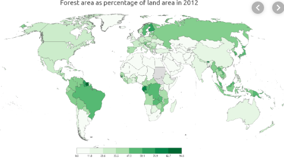

World Overload
Earth
Food Security
Relationships
Safety
Games

Is Deforestation real?

YES! The net result is an average forest loss of 31 million acres per year during that period – that’s about the size of the state of Mississippi, each year. The wood is used to make various items such as paper, furniture, household items, and more. There are other materials that could replace wood, so why hurt our environment for basic needs.
Causes
Human activities as agricultural expansion, cattle breeding, timber extraction, mining, oil extraction, dam construction and infrastructure development. enturies-old trees are cut down to make timber or cellulose for the furniture or paper industry. Any system employed for wood cutting causes serious damage to the ecosystem, and these damages are amplified by construction of roads required for vehicles and to trasport chopped timber to its destination. Unlike the orignal 14%, rainforests now cover a mere 6% of earth's land surface.
What we can do!
Plant a tree.
Support companies that produce products by causing minimal harm to the environment. To improve your prospects of being able to make informed decisions about these companies and the many other items listed in this article, don’t forget to read and research extensively. The deeper you dig, the more information you’ll unearth. At the same time, you’ll also be learning how to reach out effectively, seeing that you’ll soon know how everything is interrelated.
Recycle and buy recycled products.
Work with NGO’s to establish parks to protect rainforests and wildlife. Become directly involved in more ways than one by signing up as a member of Friends of the Earth.
On a much larger, political and/or corporate scale, it would be ideal to become a serving member of the World Wide Fund for Nature.
Or else...
Technology is not advanced enough to fake our breathing for long periods of time, that would be our backup. Our priority should be saving the trees that give us the oxygen we breathe. Most of this oxygen comes from tiny ocean plants – called phytoplankton – that live near the water's surface and drift with the currents.